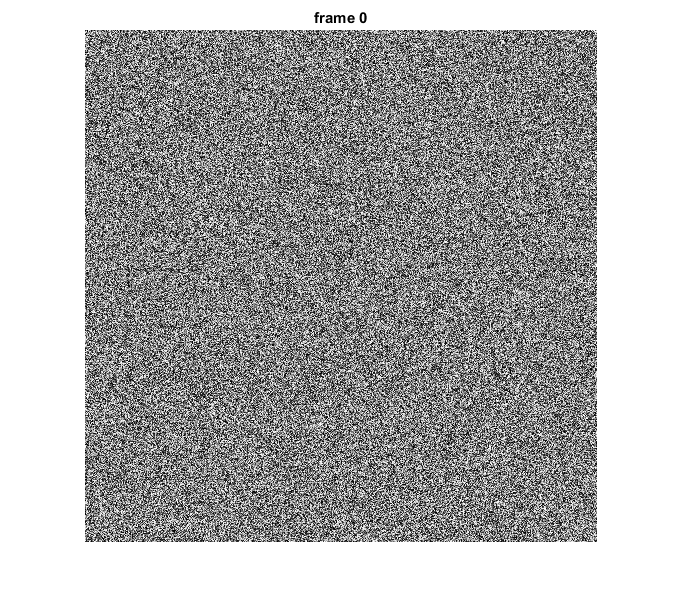
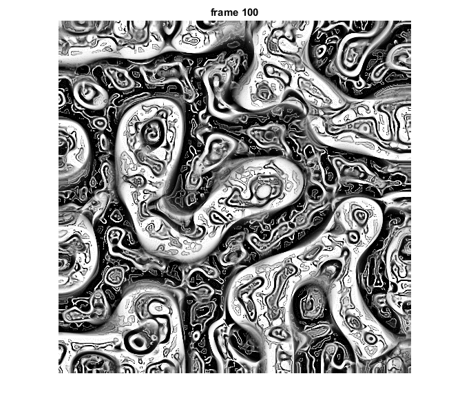

Multi-Scale Turing Patterns Generator
Inspired by: http://www.jonathanmccabe.com/Cyclic_Symmetric_Multi-Scale_Turing_Patterns.pdf
Sources:
function turing_patterns_demo()Options
sz = 512; % image size, should be 2^n nscales = 6; % number of pyramid levels, less than log2(sz) write_vid = true; % whether to save as video
Initialize
a = rand(sz,sz);
ms = zeros(sz,sz,nscales);
vs = zeros(sz,sz,nscales);
[R,C] = ndgrid(1:sz);Prepare plot
hImg = imshow(a);
title('frame 0')Prepare video writer
if write_vid if true % builtin MJPG encoder, should work across all systems vidext = 'avi'; fourcc = 'MJPG'; else % FFmpeg in OpenCV can use OpenH264 for encoding H.264, % download binaries and set OPENH264_LIBRARY environment variable % https://github.com/opencv/opencv/tree/3.3.1/3rdparty/ffmpeg % https://github.com/cisco/openh264/releases vidext = 'mp4'; fourcc = 'H264'; end vidfile = fullfile(tempdir(), ['turing.' vidext]); vid = cv.VideoWriter(vidfile, [sz sz], 'FourCC',fourcc); assert(vid.isOpened(), 'Could not open output video'); end
Main loop
counter = 0;
while ishghandle(hImg)
counter = counter + 1;
if counter > 100, break; end
% update pattern
a_lods = cv.buildPyramid(a, 'MaxLevel',nscales);
for i=1:nscales
[ms(:,:,i), vs(:,:,i)] = process_scale(a_lods, i);
end
[~,mi] = min(vs, [], 3);
mi = sub2ind([sz sz nscales], R, C, mi);
a = a + ms(mi) * 0.025;
a = (a - min(a(:))) / (max(a(:)) - min(a(:)));
% write video frame
if write_vid
frame = repmat(uint8(a*255), [1 1 3]); % 8-bit RGB
vid.write(frame);
end
% show result
set(hImg, 'CData',a);
title(sprintf('frame %d',counter));
drawnow;
endFinalize video
if write_vid vid.release(); fprintf('Video saved: %s\n', vidfile); if ispc() && ~mexopencv.isOctave() %HACK: WINOPEN not implemented in Octave winopen(vidfile); end end
Video saved: C:\Users\Amro\AppData\Local\Temp\turing.avi
endHelper function
function [m,v] = process_scale(a_lods, lod) d = a_lods{lod} - cv.pyrUp(a_lods{lod+1}); for i=2:lod d = cv.pyrUp(d); end m = sign(d); v = cv.GaussianBlur(d.*d, 'KSize',[3 3]); end